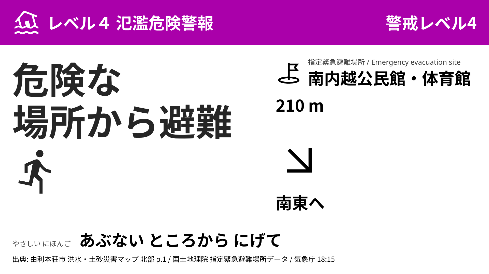

由利本荘 2 施設目の候補 — 駅前との比較
同じ電文（VXKOii-202610211815・レベル 4 氾濫危険警報・18:15）を、駅前と各候補の 16:9 で描いたもの。左が駅前、右が候補。方位差は駅前の矢印との角度差。
1. 鶴舞会館 司令官の推奨
駅前から 910 m 西 ／ 最寄り: 本荘公園前広場 160 m・東へ ／ 方位差 156°
2. 由利高等学校グラウンド
駅前から 1,576 m 北 ／ 最寄り: 南内越公民館・体育館 210 m・南東へ ／ 方位差 122°

3. 石脇公園グラウンド
駅前から 1,468 m 北北西 ／ 最寄り: 石脇体育館 80 m・北へ ／ 方位差 97°